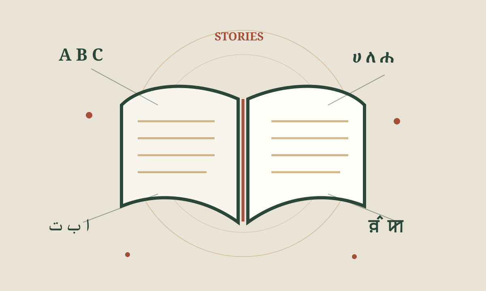

גילוי האינטרנט · דרום אפריקה · שפות וחינוך
ספרייה של סיפורים באינספור קולות: המסע אל African Storybook
במרחק קליק אחד מיוהנסבורג מסתתרת ספרייה דיגיטלית שמציעה אלפי ספרי ילדים מאוירים ביותר מ־260 שפות. אבל החלק המעניין באמת אינו רק מספר הספרים: זהו ניסיון לבנות תשתית שבה קהילות יכולות לספר את סיפוריהן, לתרגם אותן ולהעביר אותן הלאה.

הבעיה שהאתר מנסה לפתור
דמיינו ילד שגדל במקום שבו מדברים בבית שפה אחת, לומדים בבית הספר בשפה אחרת, וכמעט שאין ספרי ילדים כתובים בשפה הראשונה. הילד יכול ללמוד לקרוא, אבל חומרי הקריאה הזמינים לו אינם בהכרח מדברים אליו: הם מתארים מציאות אחרת, משתמשים במילים שאינן חלק מחיי היומיום שלו, ולעיתים פשוט אינם קיימים בשפה שהוא מכיר היטב.
זהו הפער ש־African Storybook מנסה לצמצם. המיזם הוקם בשנת 2014 ביוזמת Saide, ארגון חינוכי ללא מטרות רווח שמושבו ביוהנסבורג, דרום אפריקה. הרעיון פשוט למדי, אך בעל השלכות רחבות: להנגיש ספרי תמונות וסיפורים קצרים לילדים בשפות אפריקאיות, ולאפשר לקהילות עצמן להשתתף ביצירה ובהפצה של חומרי הקריאה.
לא רק לקרוא: גם לתרגם, להתאים וליצור
האתר בנוי סביב ארבע פעולות מרכזיות: קריאה, שימוש חינוכי, הדרכה ויצירה. אפשר למצוא בו ספרים בודדים ואוספים לפי נושא, לקרוא אותם ברשת, להוריד אותם לקריאה ללא חיבור לאינטרנט או להדפיס אותם. לצד הספרייה עצמה מופיעים מדריכים וסיפורי שימוש של מורים, הורים וארגונים מקומיים.
החלק החריג והמעניין ביותר הוא אזור היצירה. משתמשים יכולים ליצור ספר תמונות חדש, לתרגם סיפור קיים, להתאים אותו לרמת קריאה אחרת ולבנות אוספים משלהם. כך האתר אינו מתפקד רק כמדף דיגיטלי שמישהו מילא מראש, אלא גם ככלי עבודה עבור אנשים שרוצים להוסיף לו תוכן.
יותר מ־260 שפות — ומה המשמעות של המספר הזה?
לפי עמוד המיזם באתר Saide, הפלטפורמה מציעה יותר מ־5,000 ספרי תמונות ביותר מ־260 שפות באפריקה. המספרים האלה אינם רק נתון מרשים לקטלוג. הם מצביעים על תפיסה אחרת של תשתית חינוכית: במקום להניח שכל חומרי הלימוד צריכים להיכתב בשפה מרכזית אחת ואז להיות מתורגמים החוצה, אפשר לבנות מערכת שבה שפות רבות הן נקודת מוצא לגיטימית ליצירה.
יש כאן גם ממד תרבותי. סיפור ילדים אינו רק אמצעי לתרגול קריאה. הוא מעביר שמות של צמחים ובעלי חיים, יחסי משפחה, הומור, נופים, מנהגים ודימויים. כאשר ילדים קוראים סיפורים שנוצרו בהקשר המקומי שלהם, הם פוגשים חומר כתוב שאינו מציג את עולמם כחריג או שולי.
טכנולוגיה פתוחה כדרך להפיץ ידע
המודל של African Storybook נשען על גישה פתוחה לתוכן ועל האפשרות לעשות בו שימוש חוזר בהתאם לרישיון. משמעות הדבר היא שסיפור יכול לעבור התאמה לשפה אחרת, להיקרא בכיתה, להישמר לשימוש לא מקוון או להפוך לבסיס ליצירה נוספת. זהו שינוי חשוב ביחס למודל שבו ספר הוא מוצר מוגמר שנעול אצל המוציא לאור והקורא הוא צרכן בלבד.
האתר מציע גם אפליקציות לקריאה וליצירה. אפליקציית הקורא מאפשרת גישה לספרים גם ללא חיבור רציף לרשת, ואפליקציית היוצר נועדה לאפשר יצירת ספרים במכשיר נייד. במקומות שבהם החיבור לאינטרנט אינו מובן מאליו, האפשרות לעבוד במצב לא מקוון אינה תוספת שולית אלא חלק מהתכנון.
מה כדאי לעשות באתר?
- להתחיל בקריאה: להיכנס למדור Read, לבחור שפה או נושא ולפתוח ספר קצר. גם מי שאינו מכיר שפה אפריקאית יכול להתרשם מהאיורים ומהמגוון.
- להשוות בין שפות: לבחור סיפור שמופיע בכמה גרסאות ולראות כיצד אותו רצף רעיוני מקבל צורה לשונית אחרת.
- לבדוק את כלי היצירה: אזור Make מציג את האפשרות לתרגם, להתאים וליצור ספרים, ולא רק לצרוך את התוכן הקיים.
- לעיין במדריכים: אזור Guide מיועד למורים, הורים וארגונים המעוניינים להשתמש בספרים או לפתח חומרי קריאה נוספים.
הגבולות והדברים שכדאי לדעת
לא כל ספר באתר עבר בהכרח אותה רמת בדיקה. האתר מבחין בין ספרים שאושרו על ידי African Storybook או שותפיו לבין ספרים שנוצרו בפלטפורמה וטרם נבדקו. ההבחנה הזאת חשובה: פתיחות מאפשרת צמיחה מהירה והשתתפות רחבה, אך היא גם מחייבת את הקורא לשים לב למעמד של כל פריט ולא להניח שכל תוכן עבר עריכה ואימות זהים.
בנוסף, הממשק אינו בהכרח אינטואיטיבי לכל מבקר חדש, וחלק מהערך שלו מתגלה רק אחרי שמבינים את ההבדל בין קריאה, שימוש, מדריכים ויצירה. זהו אתר שנועד בראש ובראשונה לשרת קהילות חינוך ושפה, ולא חוויית גלישה בידורית מלוטשת.
למה שווה להכיר אותו?
African Storybook הוא דוגמה טובה לאינטרנט במיטבו: לא עוד אתר שמנסה למשוך תשומת לב, אלא תשתית שמאפשרת לאנשים ליצור, לשמר ולהפיץ ידע. הוא מחבר בין טכנולוגיה פשוטה יחסית לבין שאלה עמוקה — מי זוכה לספר את הסיפורים של מי, ובאילו שפות הם נעשים זמינים.
הפרויקט אינו פותר לבדו את אתגרי החינוך, האוריינות או שימור השפות באפריקה. אבל הוא מדגים כיצד כלי דיגיטלי פתוח יכול להרחיב את אפשרויות הפעולה של מורים, הורים, מתרגמים ויוצרים מקומיים. במקום להסתפק בהנגשת תוכן לקהל, הוא מנסה להעניק לקהל גם את הכלים לייצר אותו.
כניסה ל־African Storybook ←